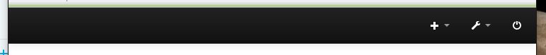

I have just done a manual install of Emoncms 9.3 | 2015.12.30 on a Raspberry Pi 2 that was already booting Jessie from an external disk drive. Basically I followed the steps here:
https://github.com/emoncms/emoncms/blob/master/docs/RaspberryPi/readme.md
One difference is that I have the feed directories on a separate data partition but that all seems to be working fine.
As can be seen in this screen clipping there is no Dashboards icon or menu item:

The screenshot is from Firefox 43 but it is the same in IE11, Edge and Chrome. I had a search through the forums and found a recommendation to clear the browser cache. I did this and still no icon / menu item.
Other than that it all seems to be working fine I can use the visualizations to see real time data, but can't see how to create a dashboard.
Are there any extra modules i should install that aren't mentioned in the install guide?
Thanks,
David
Re: Dashboard icon / menu item missing
See http://openenergymonitor.org/emon/node/11844
Paul
Re: Dashboard icon / menu item missing
:) Thanks Paul, dashboards are back.
David